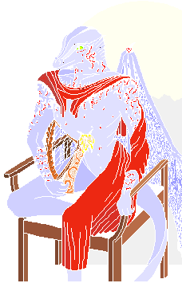

Karne hadn't realised exam revision
would be so strenuous.. |
|
'The Destiny of My People' - 1995
Acrylic and ink on paper - 61K
One of my earliest full colour dragon pictures. Theme - the future, space explorations etc. etc. and just a touch of hope - after all, who better to inherit the earth? |
|
'Crackle' - 1995
Pencil on paper - 28K
An early sketch this one, note: a very similar design was used for the dragonling in 'Destiny. I think you can probably guess my feelings about dragons by now ;-) |
|
'Heart's Blood' - 1995
Water colour and Ink - 71K
Jane Yolen's 'Heart's Blood' Trilogy has a special place in my heart. I read it when I was very young (too young to appreciate its subtleties) and it probably coloured my entire view of fantasy since! When I read it again many years later, I only dimly recognised the storyline. Until that is, I came to a certain scene and bang! I remembered.
The scene was the death of Heart's Blood - when she sacrifices herself to save Jakkin - I remembered that even when everything else was gone. This picture is a sort of tribute to her and to the effect that Heart's Blood has had on me and my artwork. |
|
'The Harper' - 1997
Ink on paper, then computer - 11K
Done as a newsletter cover reminiscent of the style of Aubrey Beardsley - an artist that I greatly admire but sadly is little known and died far too young. (That's a dragoness by the way!) |
 |
'The Dreamer' - 1994
Acrylic and cel on paper
The first major fantasy artwork I did - St. George and the Dragon references again. The idea was to explore the conflict between the waking and the dreaming mind, and how it might be possible to break between the two. It's relevant that the 'destroyer' in this case is the human fencer (the real me) and the dragon (the dream me and a zombie at that) is on the defensive.
Don't think too deeply about that - it says things about me, I don't think I want to know! ]:=8) |
|
'The Mage' - 1997
Pencil on paper and 'puter
Granny amuses the kids... By the by - who thinks that central dragonette looks hungry? It wasn't intentional.. |
 |
Flarebright
Wall Mural - unfinished
This was done on the wall of the icsf library - since it's being knocked down I can't imagine it will exist much longer (sigh). Still this is my first attempt at a mural and was great fun to do. Perhaps there will be a flarebright Mk II some day ]:=8)
Who is she? Well now.. read my stories and wander round the lair - you'll find out. |
|
'A Tad Overripe?' - 1997
Ink on paper
Blame a certain friend for this one - avocados indeed!
ERK this piccies gone for a walk - catch it quick! |
|
'Another day in Paradise' - 1996
Mixed media on paper
One in a whole series of pictures that involve 'kissing' dragons - I'm not sure where that is going at the moment - we'll have to see :-) This picture has a distinctly ironic theme - in a rather similar fashion to 'Destiny', it represents a possible future. I for one, might not mind too much if this future came true. |
|
Maquette - 'Dragoness' - 1997
Plasticine on a wire framework
Originally built for use as an artist's model, this proved too delicate for continuous pose changes - so I left it as it is. I'm still trying to think of some suitable substance for making the wings out of! |
awaiting |

 © Michael.Wright 1999
© Michael.Wright 1999